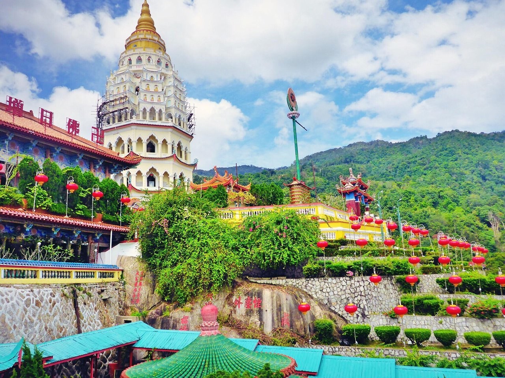

4 Days 3 Nights package
Overview
Embark on an unforgettable journey through Malaysia's diverse landscapes and rich cultural heritage with this carefully crafted tour. From the bustling streets of Kuala Lumpur to the historic charm of Melaka, and the natural wonders of Penang, and Johor, this itinerary promises an exhilarating blend of excitement and discovery. Immerse yourself in the iconic sights, vibrant markets, and mouthwatering cuisine that define each destination. Whether you're exploring ancient temples, soaring over lush rainforests, or delving into centuries-old traditions, this tour invites you to experience the vibrant tapestry of Malaysia's attractions. Let every moment be filled with wonder and adventure as you create colorful memories to cherish for a lifetime.
Day 1: Arrival Kuala Lumpur - Selangor
Morning:
Batu Caves: Begin your sightseeing with a visit to Batu Caves, located in the Gombak district of Selangor. This iconic limestone hill houses a series of caves and cave temples, with the highlight being the enormous golden statue of Lord Murugan at the entrance. To reach the main cave temple, you'll need to climb a steep flight of 272 steps, offering panoramic views of the surroundings.
Afternoon:
Evening:
Gallery
Video
Day 2: Kuala Lumpur - Penang
Morning:
Penang Hill Upon arrival, make your way to Penang Hill, one of the island's most popular attractions. Take a scenic funicular train ride to the summit, where you'll be greeted with breathtaking panoramic views of Penang and the surrounding coastline. Explore the attractions at the top, including historical colonial bungalows, temples, and nature trails.
Afternoon:
Curtis Crest Tree Top Walk: Conclude your afternoon with a visit to Curtis Crest Tree Top Walk, located within the Penang National Park. Embark on a nature walk through the lush rainforest canopy, crossing suspension bridges and enjoying panoramic views of the forest below.
Evening:
Gallery


Video
Day 3: Penang - Melaka
Morning:
Dutch Square (Red Square): Begin your exploration of Melaka with a visit to Dutch Square, also known as Red Square due to the distinctive red-painted buildings surrounding it. Marvel at the iconic landmarks such as the Stadthuys (Dutch colonial town hall), Christ Church, and the iconic Queen Victoria Fountain.
Afternoon:
Evening:
Gallery

Video
Day 4: Melaka - Johor - Airport
Morning:
Afternoon:
At Night:
Flight Departure: Catch your flight back to your home destination, concluding your trip to Malaysia with fond memories of the cultural experiences, natural beauty, and family-friendly attractions you've enjoyed throughout your journey.